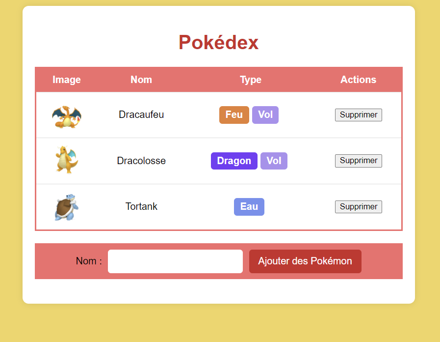
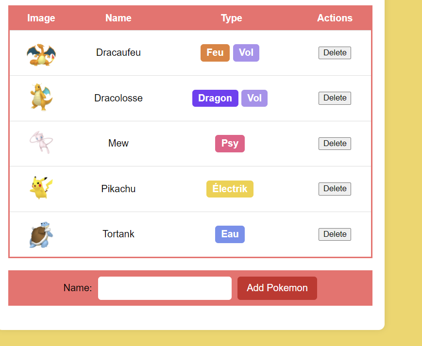
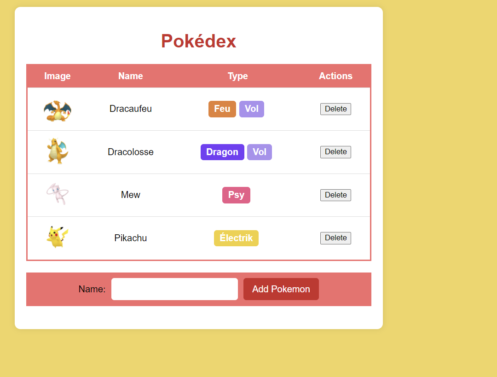

Le projet Pokedex est une application web développée dans le cadre de ma formation en BTS SIO. Il s'agit d'une application dynamique permettant de gérer une base de données de Pokémon.
Ce projet m’a permis de mettre en pratique le développement web côté serveur ainsi que la gestion de base de données.


